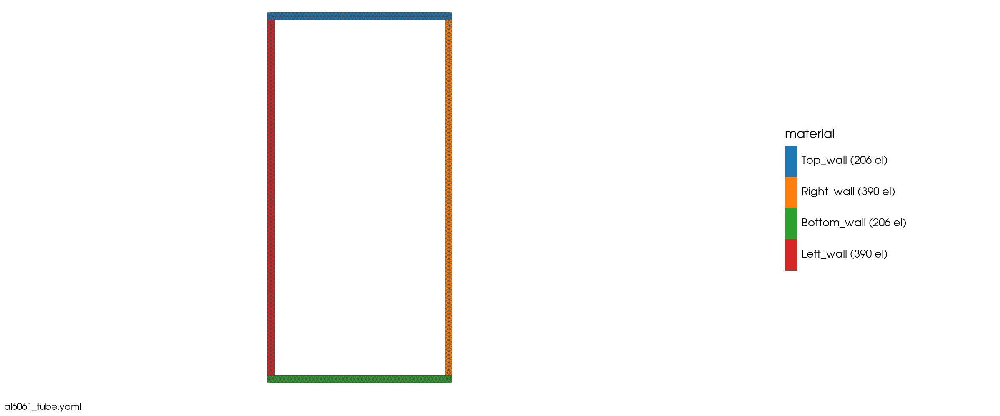
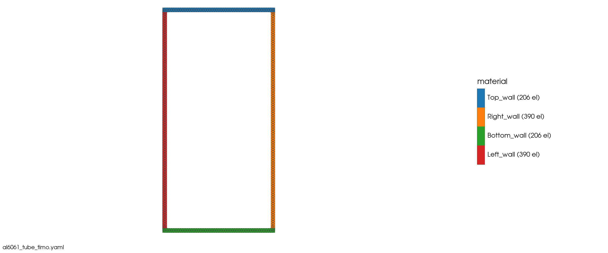
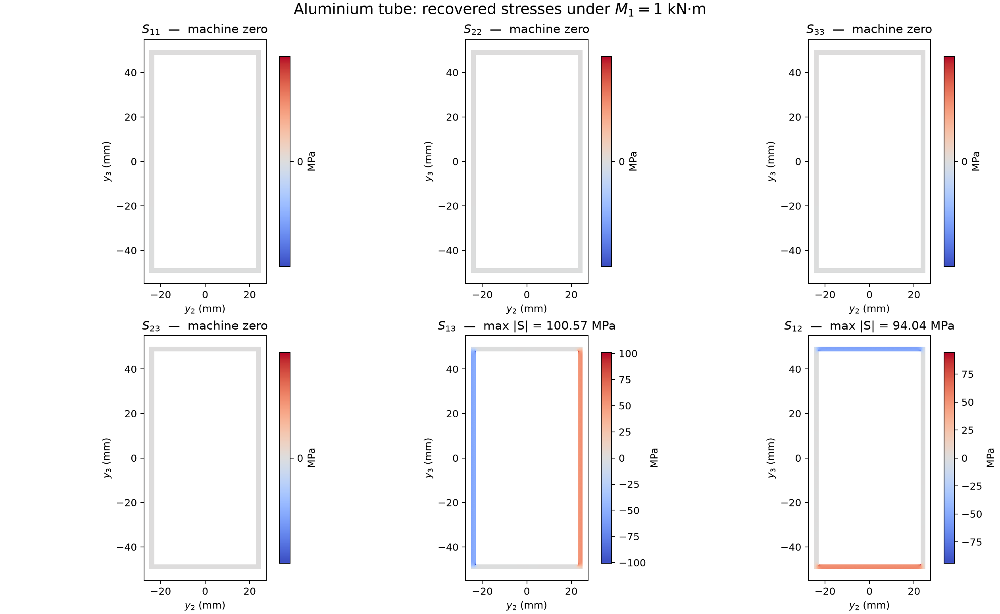
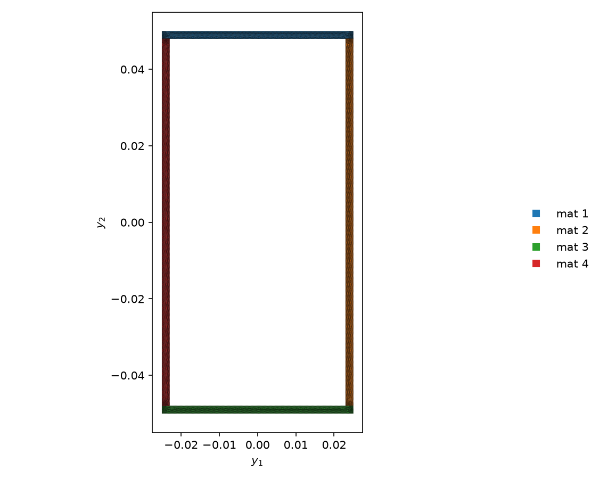
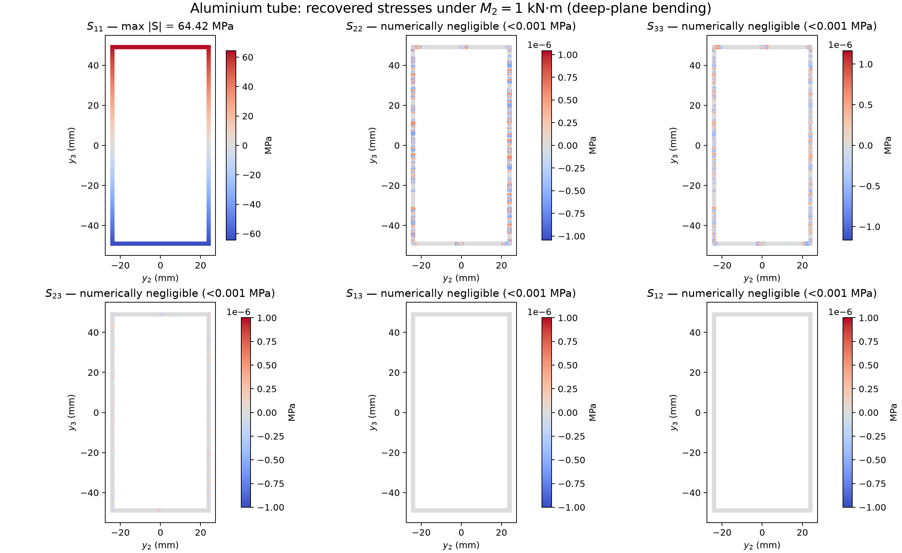
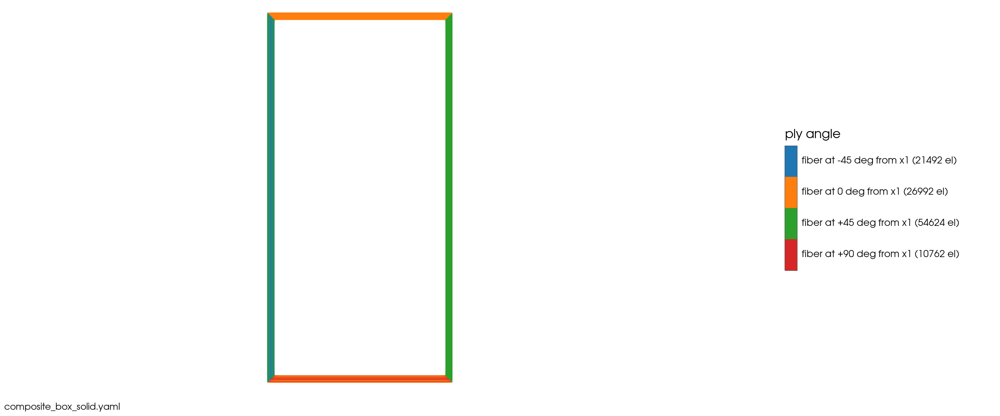
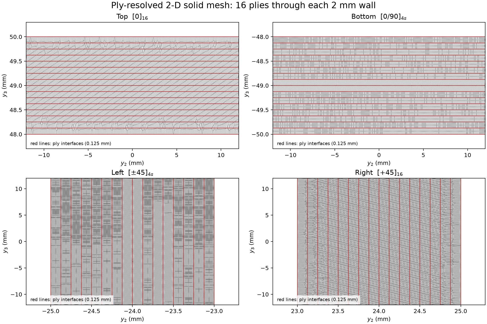
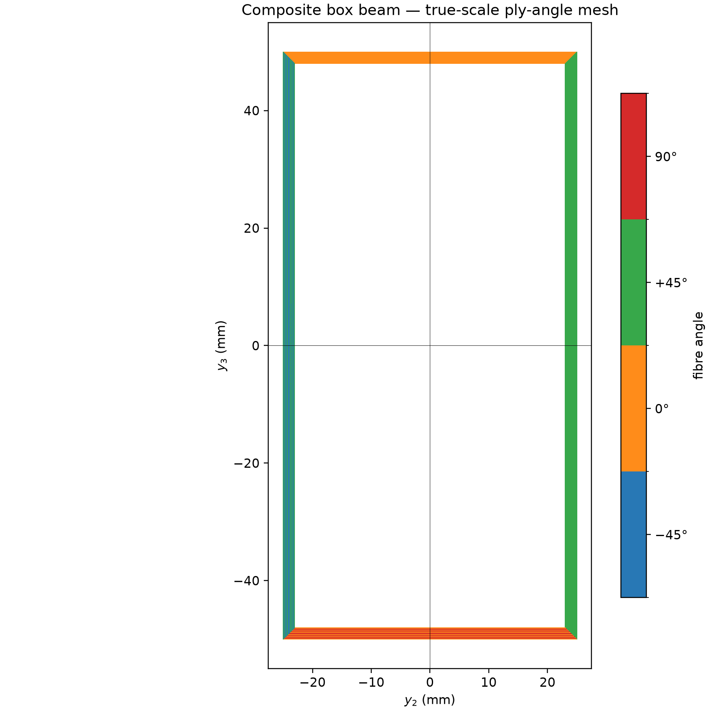
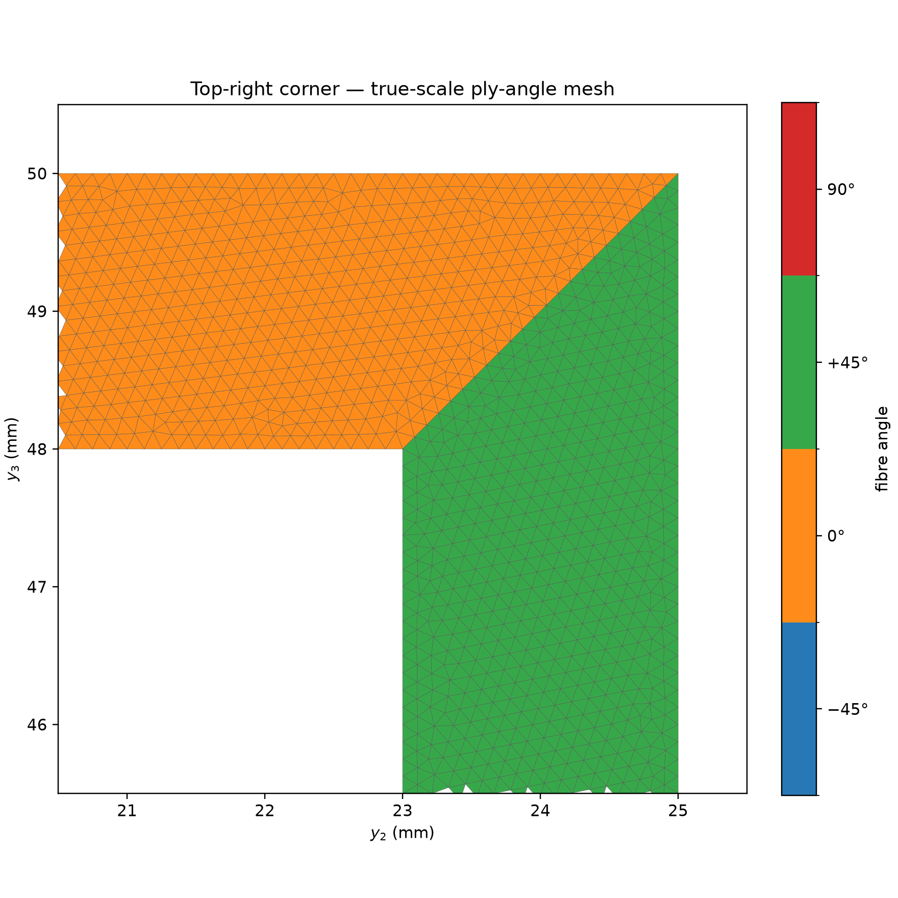
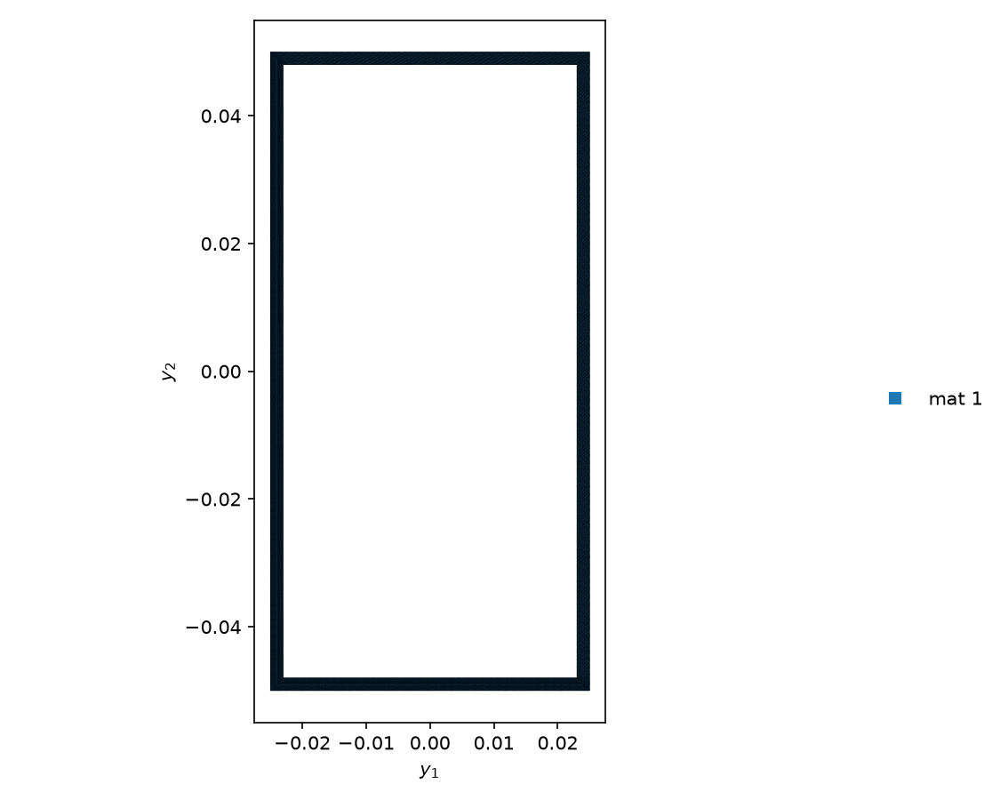

02 Aluminium tube and composite box beam#
Step 1: The aluminium tube's mesh#
Prompt
Build a 2-D solid cross-section mesh for OpenSG: a rectangular aluminium tube, 100 mm deep and 50 mm wide outside, with a 2 mm wall, centred at the origin. Mesh the four walls as separate regions. Aluminium 6061-T6: E = 69 GPa, ν = 0.33, density 2700 kg/m³. Show me the mesh.
CompositesAI


Rectangular tube mesh#
Built and checked the OpenSG 2-D solid beam section.
Outer size: 100 mm deep × 50 mm wide
Wall thickness: 2 mm
Centre: origin
Material: Aluminium 6061-T6 — E = 69 GPa, ν = 0.33, ρ = 2700 kg/m³
Mesh: 1,192 tri3 elements, 888 nodes, 1 mm target size
Separate regions: top, right, bottom, and left walls
Model: OpenSG solid beam (
n_model: 1), validated with no reversed or degenerate elements.
The mesh preview and OpenSG/YAML and Gmsh mesh exports are attached.
OpenSG tube section (YAML)
Gmsh tube mesh
Step 2: Beam properties of the tube#
Prompt
Homogenize this section with OpenSG’s solid beam model. Give the Timoshenko 6×6 stiffness and the mass matrix in SI units, check that the mesh is fine enough, and compare EA, EI and GJ with the thin-walled textbook formulas.
CompositesAI


Timoshenko tube mesh#
Homogenization completed with the converged Timoshenko solid-beam model. Material: \(E = 69\ \mathrm{GPa}\), \(\nu = 0.33\), \(\rho = 2700\ \mathrm{kg/m^3}\).
Rows/columns are \([e_{11},\gamma_{12},\gamma_{13},\kappa_1,\kappa_2,\kappa_3]\). Stiffness entries use the corresponding SI generalized units.
Key terms:
\(EA = 4.02960 \times 10^7\ \mathrm{N}\)
\(GA_2 = 3.37277 \times 10^6\ \mathrm{N}\)
\(GA_3 = 9.38542 \times 10^6\ \mathrm{N}\)
\(GJ = 1.59282 \times 10^4\ \mathrm{N\cdot m^2}\)
\(EI_2 = 5.34873 \times 10^4\ \mathrm{N\cdot m^2}\)
\(EI_3 = 1.81455 \times 10^4\ \mathrm{N\cdot m^2}\)
The section is symmetric: tension, shear, and mass centres are at the origin to numerical precision.
Here the translational diagonal terms are \(\mathrm{kg/m}\), and the rotational terms are \(\mathrm{kg\cdot m}\). Mass per unit length is \(1.5768\ \mathrm{kg/m}\).
Textbook comparison
Quantity |
OpenSG |
Textbook |
Difference |
|---|---|---|---|
\(EA\) |
\(4.02960\times10^7\ \mathrm{N}\) |
\(EA = 4.02960\times10^7\ \mathrm{N}\) |
0.00% |
\(EI_2\) |
\(5.34873\times10^4\ \mathrm{N\cdot m^2}\) |
\(E I_{22} = 5.34873\times10^4\ \mathrm{N\cdot m^2}\) |
0.00% |
\(EI_3\) |
\(1.81455\times10^4\ \mathrm{N\cdot m^2}\) |
\(E I_{33} = 1.81455\times10^4\ \mathrm{N\cdot m^2}\) |
0.00% |
\(GJ\) |
\(1.59282\times10^4\ \mathrm{N\cdot m^2}\) |
thin-wall closed-cell \(1.57257\times10^4\ \mathrm{N\cdot m^2}\) |
+1.29% |
The torsion comparison uses \(J \approx 4A_m^2/\oint(ds/t)\) on the wall midline.
Mesh check
The original 1,192-element tri3 mesh is adequate:
Original mesh vs. first h-refinement: worst change 0.255%.
Finest h/p comparison: worst change 0.055%.
The study meets the 1% convergence criterion.
Attached: Timoshenko tube mesh, al6061_tube_properties.md (full stiffness, compliance, and mass matrices), and convergence.md (mesh study).
Full stiffness, compliance, and mass matrices
Mesh-convergence results
Step 3: Stresses under a tip torque#
Prompt
Use the tube as a 1 m cantilever with a 1 kN·m torque at the tip. Recover the local stresses and show contour plots of all six stress components. Compare the wall shear stress with τ = T/(2·A_m·t), and the tip twist with T·L/(G·J).
CompositesAI

Torsion recovery mesh#


Six recovered stress contours#
Recovered torsional stresses for the 1 m cantilever under \(M_1=1.0\) kN·m. The recovered torque is 1000.001 N·m (0.00015% residual).
\(S_{11}, S_{22}, S_{33}, S_{23}\): numerically zero under pure torque.
Top/bottom walls: \(|S_{12}| = 53.10\) MPa at the wall midline.
Side walls: \(|S_{13}| = 53.11\) MPa at the wall midline.
Local corner peaks reach 100.57 MPa in \(S_{13}\) and 94.04 MPa in \(S_{12}\); these are localized solid-model corner effects, not the thin-wall membrane value.
For the wall midline, with \(A_m=(48\text{ mm})(98\text{ mm})=0.004704\text{ m}^2\),
The recovered midwall shear is within 0.09% of this result.
Using the homogenized \(GJ=1.59282\times10^4\ \text{N·m}^2\),
The thin-wall value is 0.06359 rad (3.643°), so the OpenSG twist is 1.27% lower.
Attached: al6061_tube_torsion_stress_components.png with all six global stress contours, plus al6061_tube_torsion_dehom.vtk containing the recovered fields.
Recovered stress field data (VTK)
Step 4: Stresses under a tip bending moment#
Prompt
Now apply a 1 kN·m bending moment at the tip that bends the tube in its deep plane. Show contour plots of all six stress components, and compare the axial stress with σ = M·y/I and the tip deflection with M·L²/(2·E·I).
CompositesAI


Deep-plane bending mesh#


Six deep-plane bending stress contours#
Applied \(M_2=1.0\) kN·m about the width axis, producing bending in the 100 mm deep plane. The recovered resultant is 1000.0005 N·m.
Recovered axial stress: \(S_{11}=\pm64.422\) MPa at the outer-fibre element centroids.
Other components are negligible: \(|S_{22}|,|S_{33}|<1.2\) Pa, \(|S_{23}|<0.43\) Pa, and \(S_{13}=S_{12}=0\).
The analytical outer-surface value is
\[ \sigma_\mathrm{max}=\frac{My}{I_{22}} =\frac{(1000)(0.05)}{7.75179\times10^{-7}} =64.501\ \text{MPa}. \]The 0.12% difference is from reporting element-centroid stresses rather than extrapolated surface values.
Using \(EI_2=5.34873\times10^4\ \text{N·m}^2\),
This equals the textbook \(M L^2/(2 E I_{22})\) result to displayed precision.
Attached: al6061_tube_deep_bending_stress_components.png with all six stress contours, and al6061_tube_deep_bending_dehom.vtk with the recovered field data.
Deep-plane bending field data (VTK)
Step 5: The composite box beam and its ply mesh#
Prompt
Now build a composite box beam with the same outer size and 2 mm walls of T300/5208 (16 plies of 0.125 mm), with a different layup on each side: top [0]₁₆, bottom [0/90]₄s, left [±45]₄s, right [+45]₁₆. T300/5208 (transversely isotropic): E1 = 181 GPa, E2 = 10.3 GPa, G12 = 7.17 GPa, ν12 = 0.28, ν23 = 0.4, density 1600 kg/m³. Mesh every ply and show the mesh.
CompositesAI


Composite box-beam mesh#


Ply-resolved mesh detail#
Assumed transverse-isotropy completion: \(E_3=10.3\) GPa, \(G_{13}=7.17\) GPa, \(\nu_{13}=0.28\), and \(G_{23}=3.679\) GPa. All other T300/5208 values are as specified.
Built a checked OpenSG 2-D solid composite box section:
Wall |
Layup, outer → inner |
|---|---|
Top |
\([0]_{16}\) |
Bottom |
\([0/90]_{4s}\) |
Left |
\([\pm45]_{4s}\) |
Right |
\([+45]_{16}\) |
Outer dimensions: 50 mm wide × 100 mm deep
Wall thickness: 2.0 mm = 16 plies × 0.125 mm
Origin: section centroid
Mesh: 113,870 tri3 elements, 59,271 nodes
Each ply has an explicit interface and element-level fibre orientation.
Validation passed: no reversed or zero-area elements.
Attached: composite_box_solid_mesh.png, composite_box_ply_mesh_detail.png (ply interfaces in red), and composite_box_solid.yaml.
OpenSG composite box section (YAML)
Step 6: The box mesh at true scale#
Prompt
Show the box mesh at true scale with each ply coloured by its fibre angle: the whole tube, plus a zoom at one corner where the walls meet.
CompositesAI


True-scale composite box mesh#


Top-right corner mesh zoom#
Shown at equal geometric scale:
composite_box_true_scale_mesh.png: whole \(50\ \mathrm{mm}\times100\ \mathrm{mm}\) tube, coloured by fibre angle.composite_box_top_right_corner_zoom.png: top-right junction, showing \(0^\circ\) top plies meeting \(+45^\circ\) right-wall plies.
The colour legend covers \(-45^\circ\), \(0^\circ\), \(+45^\circ\), and \(90^\circ\) ply orientations.
Step 7: Beam properties of the box#
Prompt
Homogenize the composite box with OpenSG’s solid beam model and compare its 6×6 with the aluminium tube. Which couplings appear, and where are the tension and shear centres now?
CompositesAI


Composite box homogenization mesh#
Homogenization completed for the ply-resolved composite box. The Timoshenko stiffness uses rows/columns \([e_{11},\gamma_{12},\gamma_{13},\kappa_1,\kappa_2,\kappa_3]\):
Key comparison with the aluminium tube:
Term |
Composite box |
Aluminium tube |
Change |
|---|---|---|---|
\(EA\) (\(\mathrm{N}\)) |
\(3.5874e7\) |
\(4.0296e7\) |
−11.0% |
\(GA_2\) (\(\mathrm{N}\)) |
\(1.2329e6\) |
\(3.3728e6\) |
−63.4% |
\(GA_3\) (\(\mathrm{N}\)) |
\(6.7860e6\) |
\(9.3854e6\) |
−27.7% |
\(GJ\) (\(\mathrm{N\cdot m^2}\)) |
\(8.7494e3\) |
\(1.5928e4\) |
−45.1% |
\(EI_2\) (\(\mathrm{N\cdot m^2}\)) |
\(7.0492e4\) |
\(5.3487e4\) |
+31.8% |
\(EI_3\) (\(\mathrm{N\cdot m^2}\)) |
\(1.0468e4\) |
\(1.8146e4\) |
−42.3% |
Unlike the essentially diagonal aluminium law, the asymmetric composite layups create substantial coupling. The largest normalized terms are:
\(K_{34}=-7.10\times10^4\), shear–torsion coupling (0.291)
\(K_{15}=4.00\times10^5\), extension–bending coupling (0.252)
\(K_{36}=4.76\times10^4\), shear–bending coupling (0.179)
\(K_{13}=-1.98\times10^6\), extension–shear coupling (0.127)
\(K_{46}=1.03\times10^3\), torsion–bending coupling (0.107)
The off-diagonal terms also show cross-shear, additional shear–bending, and cross-axis bending couplings.
Centres, relative to the geometric origin \((y_2,y_3)\):
Tension centre: (−0.359 mm, +11.161 mm)
Shear centre: (−12.126 mm, −1.115 mm)
Aluminium centres were effectively at the origin.
The composite mass per length is 0.9344 kg/m versus 1.5768 kg/m for aluminium. The full stiffness, compliance, and mass matrices are in composite_box_properties.md.
Full stiffness, compliance, and mass matrices
Step 8: The box under the tip torque#
Prompt
Apply the same 1 kN·m tip torque to the composite box. Show contour plots of all six stress components with a rainbow colour bar, give the tip twist and any tip deflection, and say whether τ = T/(2·A_m·t) and T·L/(G·J) still hold.
CompositesAI
I can compute the coupled beam response, but cannot safely recover or plot the six local stress fields for this ply-resolved solid model: its per-element material frames are not supported by the solid-beam stress-recovery route. Producing contours—including the requested rainbow plots—would be unreliable.
For the 1 m cantilever under \(M_1=1\ \mathrm{kN\cdot m}\), the full compliance gives:
Tip twist: \(\theta = 0.13092\ \mathrm{rad} = 7.501^\circ\)
Effective torque-only stiffness:
\[ GJ_\mathrm{effective}=1/S_{44}=7.6383\times10^3\ \mathrm{N\cdot m^2}. \]The diagonal \(K_{44}=8.7494\times10^3\ \mathrm{N\cdot m^2}\) alone would predict only 6.549°; coupling increases twist by 14.6%.
Torque also induces bending through the asymmetric laminate:
\(\kappa_2=-1.521\times10^{-3}\ \mathrm{m}^{-1}\) → bending-deflection component 0.760 mm
\(\kappa_3=-2.036\times10^{-2}\ \mathrm{m}^{-1}\) → bending-deflection component 10.179 mm
So a nominally pure tip torque produces substantial lateral deflection, unlike the aluminium tube.
The thin-wall expressions need qualification:
\(\tau=T/(2A_m t)=53.15\ \mathrm{MPa}\) is only a nominal shear-flow estimate here; anisotropic, unsymmetric walls and strong extension/shear/torsion/bending coupling invalidate it as a local ply-stress prediction.
\(\theta=TL/(GJ)\) remains valid only when \(GJ\) is the coupled torque-only value \(1/S_{44}\), not the diagonal \(K_{44}\) or a scalar lamina \(GJ\).
Step 9: The box under the tip bending moment#
Prompt
Now apply the same 1 kN·m tip bending moment in the deep plane to the composite box. Give the tip deflection and any twist from the 6×6, and say why σ = M·y/I and M·L²/(2·E·I) no longer hold.
CompositesAI
For a 1 m cantilever with a tip deep-plane moment \(M_2=1\ \text{kN·m}\), the full composite \(6\times6\) compliance gives:
Deep-plane tip deflection: 7.53 mm
Bending contribution: 7.59 mm
Coupled shear contribution: −0.067 mm
Coupled orthogonal deflection: 0.259 mm
Twist: \(\kappa_1 L=-1.521\times10^{-3}\ \text{rad}\) = −0.0871°
It also induces axial shortening of approximately 0.175 mm.
The nonzero curvatures are
The isotropic formulas no longer apply because this section is anisotropic and unsymmetric:
\(\sigma=My/I\) assumes a homogeneous, isotropic material, a neutral axis determined solely by geometry, and uncoupled pure bending. Here stress is ply-dependent and depends on each ply’s transformed stiffness and orientation.
\(ML^2/(2EI)\) assumes one scalar, uncoupled bending stiffness and neglects transverse shear. The composite section instead has a coupled \(6\times6\) stiffness/compliance: a nominally pure \(M_2\) produces torsion, weak-plane bending, shear deformation, and axial strain as well as the intended deep-plane bending.